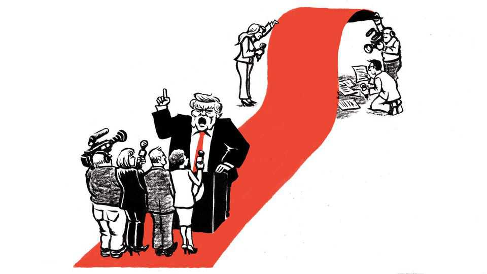

Abolish the White House press corps
With his spitefulness to the press, Donald Trump is giving it the chance to reform how it covers the presidency

Oct 1st 2026
If an American president set out to manipulate some of the best reporters—to preoccupy them with his political priorities, to distract them from what is really happening in government and to recruit them to distribute his propaganda—he could do no better than to invent the White House press corps. Journalists are understandably upset that Donald Trump, in his imperious pettiness, is trying to ban from the White House those news organisations of which he disapproves. But they are wrong to say he would be undermining press freedom. He would actually be enhancing it, at least for those reporters he has targeted. He would be liberating them from the drudgery of covering the same staged events and briefings as a legion of other journalists. He is also giving the news media an opening to do away with the antiquated, corrupting and infantilising rituals of the White House press corps.
For decades, presidents and their aides have recognised how useful it is to herd reporters into the White House press room. Once contained there, they are handy as a megaphone, and they are less likely to cause trouble. “They’d be much better off if they were in offices scattered all over town,” Michael Deaver, who as Ronald Reagan’s image-maker honed television-age methods for manipulating the press, once remarked. “If they were out on their own, they’d be hustling and digging and getting their own stories.” Serious White House reporters have long rued the gap between the prestige of their beat and its tedium and banality.
Yet despite advances in technology that have transformed the news business, White House press practice remains basically the same as in bygone days. A time-traveller from before the internet age would recognise the standing-room-only crowd packed into the briefing room—and would rightly struggle to understand how, at the same time, so many news bureaus across the country and around the world, and entire publications, could have closed their doors. Many news organisations maintain desks in the White House, stationing journalists there. A press “pool” with a rotating cast of a dozen or so journalists drawn from television, newspapers and other organisations idles on standby in case the president wants to emit commentary from the Oval Office, and it flies along with him on Air Force One when he travels. The participating outfits bear the costs and share the reporting of the pool, organised by the White House Correspondents’ Association.
The press prizes this entrapment as “access” and the chance to report on the president and his aides only when and where they choose as “transparency”. If such access and transparency had value, Americans would not have been shocked when, in 2024, President Joe Biden doddered out from behind his spokesmen to debate with Mr Trump. This is far from the first White House to punish critics and reward sycophants, and the emphasis White House reporters place on access can be corrupting. It is one reason readers encounter so many flattering references to chiefs of staff. The biggest scandals of the White House in modern times—Watergate, Iran-Contra, Mr Trump’s attempt to extort a Ukrainian investigation of the Bidens—were not revealed by White House reporters. Your columnist, who served as a White House correspondent when Bill Clinton was president, dreads to remember the call from an editor in 1998: what was all this he was reading on the Drudge Report about a presidential affair with an intern?
It was during the Clinton years that the press secretary, Michael McCurry, decided to allow the daily press briefings to be televised live. He came to lament this, because the briefings became performative. Today, reporters ask combative questions and spokespeople insult them. This is entertaining for political junkies but seldom advances the cause of truth. As far back as Jimmy Carter, presidents and their aides have prided themselves on anticipating questions in advance. And by being suckered into playing the role of a Potemkin opposition, the press appears not independent but partisan. As theatrical antagonists, White House reporters serve the president’s interests more than the public’s.
Mr Trump understands the media better than it understands itself. He is a master of what the historian Daniel Boorstin called the “pseudo event”. This is not news in the form of an unexpected development—an earthquake—but an event staged to create news and shape public opinion, such as the signing of an executive order. Boorstin connected the rise of pseudo news to the advance of technology that enabled mass, instant communication, sharpening the public’s appetite for novelty. He was writing in 1961. Pseudo events now tell the preferred story of every presidency. As Mr McCurry once put it, “The modern presidency is defined by the manipulation of the newsflow, 24 hours a day.”
But there is no need, any more, for the press to squander scarce resources serving as the president’s pseudo-event distribution machine. Rather than fight Mr Trump over access—giving the president what he probably wants, a distracting controversy over something voters do not care about, unlike prices at the pump—news organisations should treat his affront as an invitation to disband the pool and the White House Correspondents’ Association.
Let the White House live-stream its own events, and pick out the newsworthy bits. Let all White House correspondents, as some of the best do now, watch briefings online if relevant and cultivate sources by phone, secure app, or interview in a less public venue than the White House. Mr Trump, the most accessible (if not transparent or accountable) of modern presidents, will surely keep picking up the phone. Do not boycott any president, but do not wait like courtiers upon any, either. The reporters have nothing to lose but their chains and that annual carnival of self-satire, the White House Correspondents’ Dinner. ■